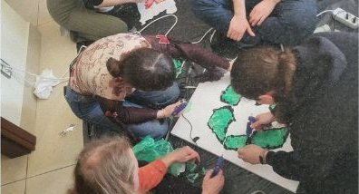
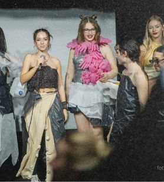
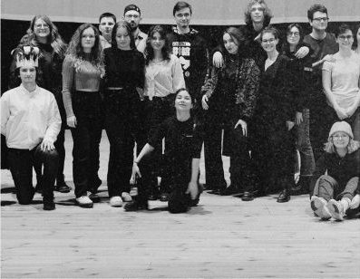
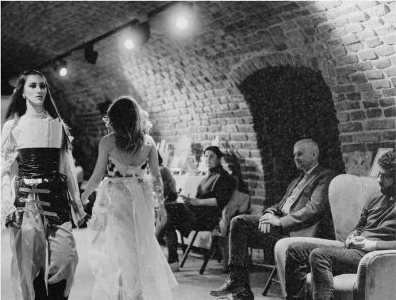
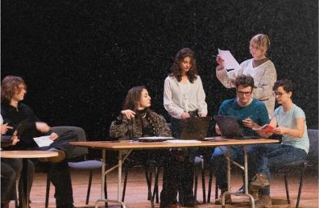
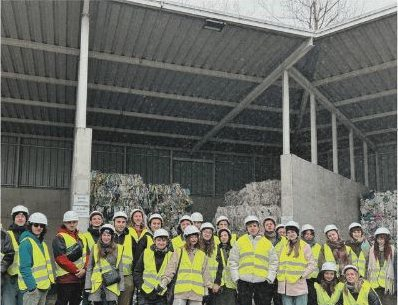

About us
Fundacja Patrz Globalnie
Empowering youth through creativity, technology and sustainability to shape a better future.






We believe creativity and collaboration can change the world.
Our mission is to give young people opportunities to learn, innovate and act on the challenges shaping our future, whether it’s environmental protection, ethical technology or cultural understanding. Every project is a space where ideas grow into meaningful actions that leave a lasting impact on communities.
Our initiatives are more than projects; they are movements that bring together diverse perspectives to co-create solutions for a better tomorrow.
What we do
International youth initiatives
We design international youth projects that blend art, sustainability and digital innovation, uniting young people from across Europe.
Practical skills
Through non-formal education, participants gain practical skills, from AI integration, 3D printing and creative arts to leadership and teamwork.
Inclusion and European values
Every programme promotes inclusion and European values, and welcomes young people with fewer opportunities.
- 10+international projects organised or joined, uniting youth from across Europe.
- 500,000+people reached online, raising awareness about sustainability, ethical AI and global challenges.
- 50+partners across Europe, creating meaningful, cross-cultural initiatives together.